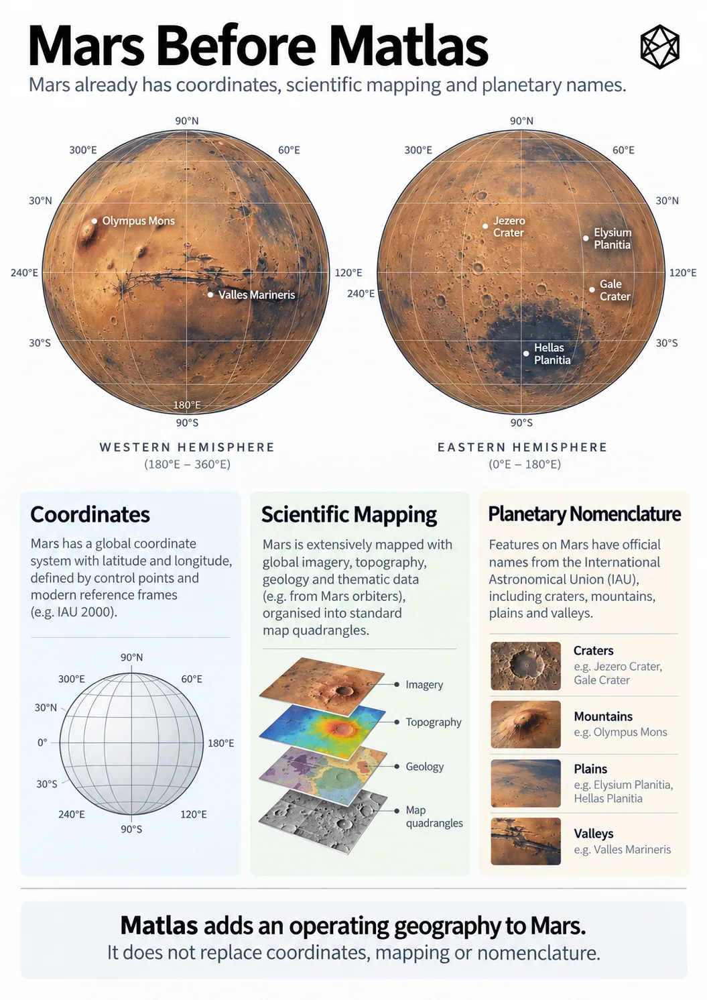

Mars Is Not Blank
The Planet We Have Already Mapped
Mars has undergone a rather unusual form of development. It has acquired detailed maps before acquiring inhabitants. Long before the first permanent settlement, road, power station or child born beneath a Martian sky, spacecraft have photographed the surface, measured its height, mapped its geology, established coordinate conventions and attached recognised names to thousands of features. By the standards of an uninhabited world, the first Martians will arrive remarkably well organised.
This changes where our problem begins. Future settlers will not step onto an unknown continent with a blank chart and start filling in the coastline. They will arrive knowing where they are, what lies over the horizon and, in many places, considerably more about the surrounding terrain than early terrestrial settlers knew about land they had occupied for generations.
Mars is not blank.
The planet before the people

Read a description of this illustration
The illustration juxtaposes existing observations and maps of Mars with an additional structural reference layer. The argument is not that scientific mapping is missing, but that a civil system needs stable, exhaustive area identities.
On Earth, maps usually followed civilisation. People moved through landscapes, established settlements, named rivers and mountains, fought over territory, built roads and eventually measured everything rather more carefully. Scientific cartography arrived on top of a human geography already thick with history, law, habit and irregular boundaries.
Mars has done much of this backwards. Astronomy and remote sensing came first. Orbiters surveyed the planet while there was nobody living beneath them, producing global mosaics, regional imagery and specialised observations of terrain, minerals, temperature, geology and the atmosphere. Selected places can then be examined at much finer resolution by instruments designed for detailed orbital imaging. The result is not one great definitive map, but a stack of different descriptions of the same physical world.
That stack is more useful than a single all-purpose map could ever be. A visible-light image answers one question, an elevation model another. Geological mapping interprets how the surface formed. Spectral observations tell us something about what it contains, while radar can reveal properties that an ordinary photograph cannot show. The value comes from being able to place those different observations against the same planet.
Beneath them sits something even more basic: geometry. A photograph may show a crater beautifully, but two independent systems still need a common way to specify which crater and exactly where within it. Modern Mars mapping therefore uses agreed coordinate conventions, normally including planetocentric latitude and east-positive longitude, tied to a defined planetary reference framework. Zero longitude is associated with Airy-0, a small crater within the larger Airy crater.
None of this is particularly exotic by modern geospatial standards. That is rather the point. Mars already has the machinery by which observations gathered at different times, by different spacecraft and by different organisations can be related to one another.
It is an impressive achievement for a planet where nobody yet needs directions home.
Maps within maps
Precise coordinates have not removed the usefulness of larger spatial structures either.
The United States Geological Survey divided Mars into thirty cartographic quadrangles, generally known as the Mars Charts and numbered MC-1 to MC-30. Their original purpose was practical mapping. A planetary surface is an inconvenient thing to publish, study or discuss as one enormous sheet, so it helps to divide it into manageable regions.
A Mars Chart is not a future county. Being inside MC-18 carries no political meaning, establishes no ownership and tells a settlement nothing about how it should organise itself. It is simply a useful spatial frame created for a particular task.
The broader lesson is more interesting than the scheme itself. A scientist can locate a point numerically, identify the cartographic region around it, inspect its terrain, relate it to geological units and compare observations gathered by entirely different missions. Several scales and several forms of spatial organisation can coexist because they serve different purposes.
Coordinates did not make those structures unnecessary.
They made them possible.
A world full of names
The map is not short of words either.
Olympus Mons, Valles Marineris, Hellas Planitia, Utopia Planitia, Elysium Planitia, Gale and Jezero are part of an established system of planetary nomenclature. Scientists, mission teams and mapmakers can use those names across organisations and generations without having to renegotiate what each one means. They are not decorative labels added to attractive maps; they form part of the working vocabulary of planetary science.
Stable naming matters. Scientific knowledge would become unnecessarily awkward if every research team had to describe Olympus Mons as “the enormous volcano over there” or independently invent a name for the same crater. A recognised vocabulary lets maps, papers and mission records accumulate around the same physical features.
But a feature name does a particular job.
Olympus Mons is a volcano. Jezero is a crater. Valles Marineris is a canyon system. Their names identify recognised physical features; they do not divide Mars into mutually exclusive pieces of territory in which every square metre must belong to one and only one named unit.
Physical geography has no reason to behave that neatly. A crater can sit inside a broader named region. A valley can cross terrain described in another way. Large features can contain smaller ones, while some of their edges may be scientifically interpreted rather than represented by one convenient line. None of this causes a problem because nomenclature is identifying things, not filing every piece of ground into a civil box.
That distinction becomes clearer when you leave the spectacular features behind.
Imagine a future maintenance crew travelling across open terrain towards a junction box beside a buried power cable. The location may have perfectly good coordinates. Orbital imagery can show the ground around it. An elevation model can tell you its height, a geological map can identify the surface unit and the nearest recognised features can retain their useful names.
The junction box does not need a mountain named after it.
Neither does the patch of ground beneath it.
Most ground does not need a name
An apparently crowded map of Mars can therefore be deceptive. Large type attracts the eye: Olympus Mons covers an enormous part of the page, while plains, craters, valleys and terrae fill much of the remaining visual space. It can feel as though names already occupy the planet.
Names do not work like paint.
Printing Utopia Planitia across a large region does not assign a unique civil identity to every arbitrary location beneath the letters. Nor would extending scientific nomenclature until it did be especially sensible.
Earth accumulated millions of place names because billions of people had reasons to create them. Villages, roads, fields, railway stations, hills, districts and local landmarks acquired names through use. Those names preserve languages, commemorate people, record physical characteristics, inherit jokes and occasionally survive long after anyone remembers what they originally meant.
Trying to perform the same exercise for Mars in advance would be strange. A committee on Earth could certainly manufacture millions of labels if given enough time and a sufficiently unhealthy relationship with spreadsheets. What it could not manufacture is the lived history that makes ordinary place names valuable.
More importantly, there is no operational requirement to do so.
Engineering already separates identification from naming. Components have serial numbers. Land parcels have references. Infrastructure assets have codes. Nobody concludes that an electricity substation lacks identity because it has failed to acquire a stirring cultural name.
Mars makes the distinction unusually visible because operational importance may arrive long before cultural importance. A solar installation, scientific instrument, emergency landing site or supply cache can matter enormously while remaining somewhere nobody feels the slightest urge to christen.
A location can be known before it becomes a place.
An unusual starting point
Put all of this together and the starting condition for human Mars is extraordinary.
Before permanent settlement, the planet already has a global coordinate framework, extensive orbital imagery, elevation models, geological and other specialist maps, cartographic subdivisions and an established nomenclature for recognised physical features. A crew can arrive somewhere no human being has ever stood and still know precisely where they are, what the surrounding terrain looks like and which significant features lie nearby.
That is much more than a map. It is a mature scientific geography.
There is no reason to disturb it. Future systems should work with the coordinates, maps and names already in use rather than pretending Mars becomes geographically interesting only when settlers arrive. Olympus Mons will remain Olympus Mons; better human infrastructure does not require planetary science to start again.
The open question is different.
A first expedition can operate perfectly well with coordinates, mission maps and a few local labels. Even a small base probably can. But permanent settlement gradually asks space to perform jobs that scientific mapping was never intended to perform: not merely locating physical things, but helping people and organisations structure repeated activity around them.
Mars is already exceptionally well measured and extensively named.
What it has never yet needed is civilisation.